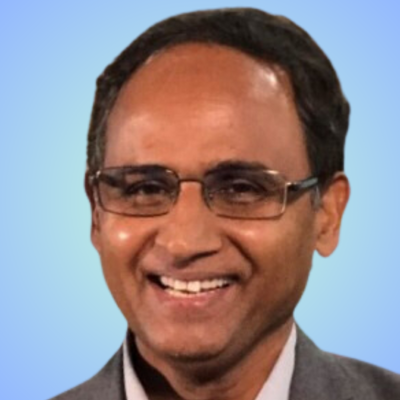

Dr. Ashwini K. Nanda is a globally recognized research scientist and executive specializing in high-performance computer systems, architecture, and artificial intelligence. He currently serves as an Honorary Chair Professor at IIT Guwahati. Furthermore, he is an Adjunct Professor at IIT ISM Dhanbad. He earned his PhD in Computer Science from Texas A&M University, his MTech in Communication Engineering from IIT Madras, and his Bachelor's degree in Electronics Engineering from Sambalpur University. His foundational technologies have powered some of the fastest supercomputers across the USA, Europe, and India.